Okayama
Okayama · Okayama
Okayama
Highlighted on the Okayama map.
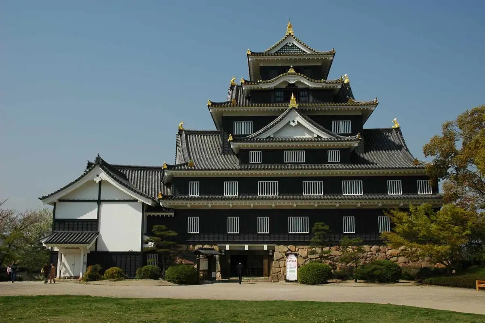
Stay
Tennen Onsen Bizen Baths Supa Hotel Okayama Eki Higashiguchi
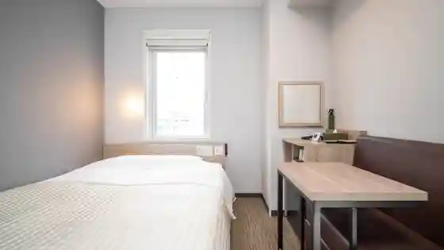
Tennen Onsen Kibi Baths Domiiin Okayama (Domiiin Onjuku no no Hotel Zugurupu)
Hotel Abesutogurande Okayama Nagomi Baths
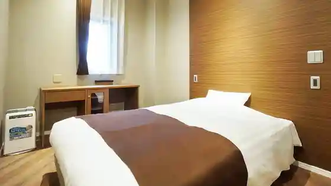
Apa Hotel (Okayama Ekimae)
Viain Okayama (JR Nishinihon Gurupu)
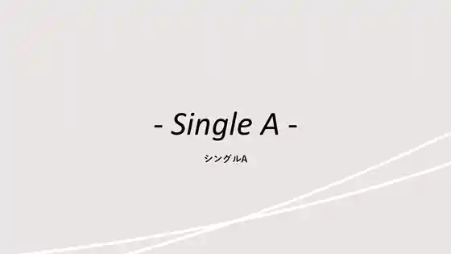
Sumairu Hotel Okayama
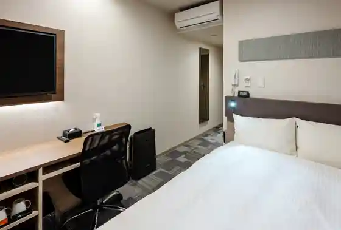
Hotel Maisuteizu Okayama
Hotel Torendo Okayama Ekimae
Hotel Eriawan Okayama (Hotel Eriawangurupu)
Dining
400℃ PIZZA
Hasu no Mi
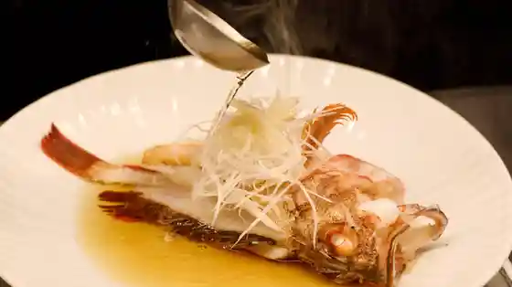
Sushi Heri
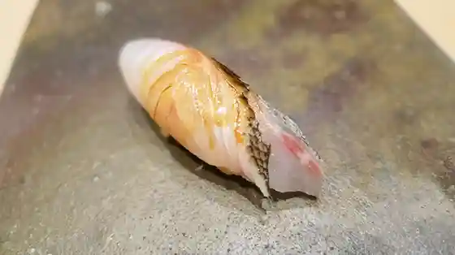
Shoku Setsu Ryori Happo
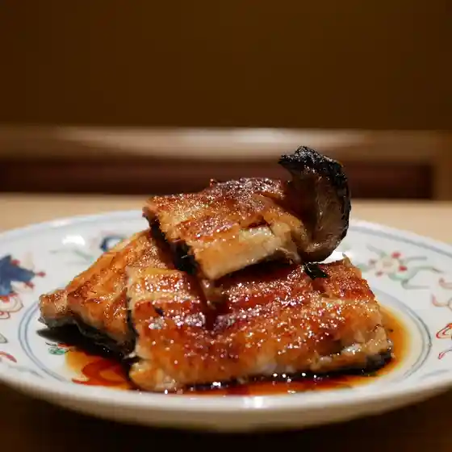
400℃ mori no machi
Ichi Chomoku
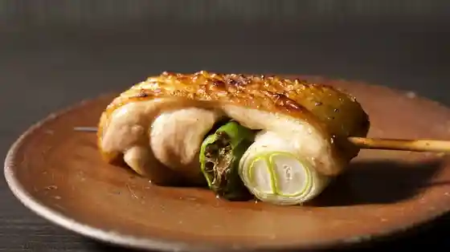
Sakana Sei Yamamoto Atsushi
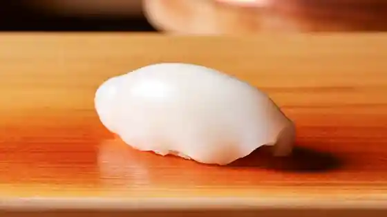
Via Pache
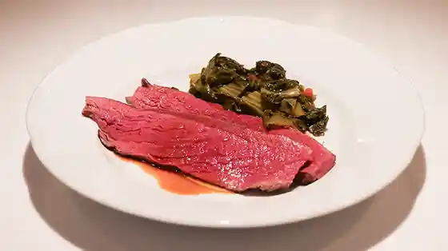
Tanuki Ya
Kisetsu Ryori Katayama
Ujo Tei
Okuto
Duomo
O Konomi Yaki Mori
Tenjin Soba
Surii Ra Senu
Onsen
Tennen Onsen Bizen Baths Supa Hotel Okayama Eki Higashiguchi Public Bath
Tennen Onsen Kibi Baths Domiiin Okayama (Domiiin Onjuku no no Hotel Zugurupu) Public Bath
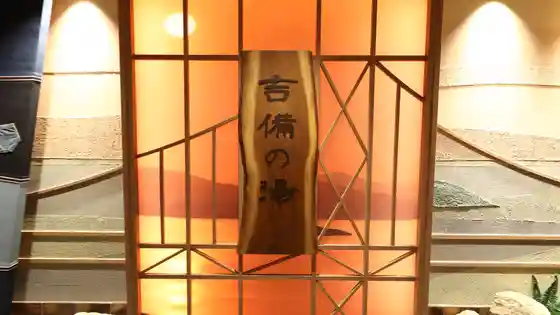
Sights
Okayama Shiro
Okayama Castle
Korakuen
Korakuen Garden
Kibitsu Shrine
Kibitsu Shrine
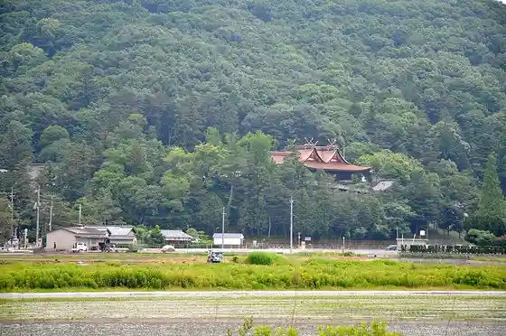
Okayama Prefectural Art Museum
Okayama Prefectural Museum of Art
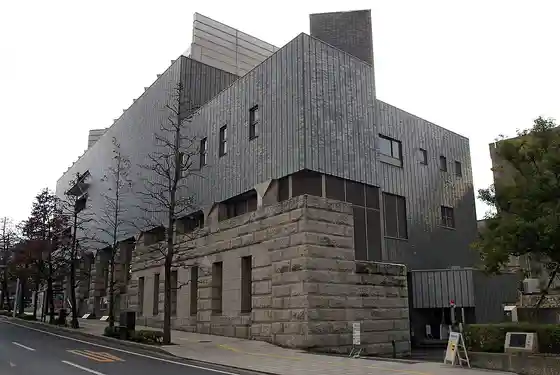
Okayama Yakusho
Okayama City Hall